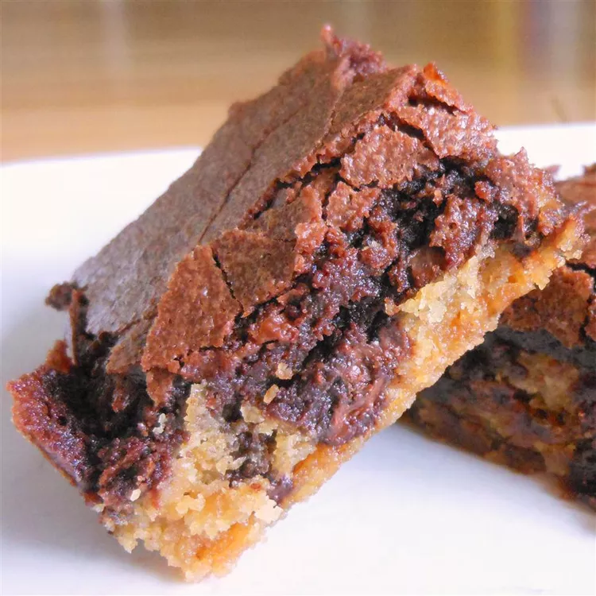

World's Best Brownies
Brownies

Description:
This brookie (brownie + cookie) recipe was inspired by a co-worker who couldn't decide if she wanted brownies or chocolate chip cookies for her birthday treat. Since she said I should just pick one, I thought this up on the way home. I couldn't find a recipe like it on Allrecipes, so I created it. These brookies go quickly; I usually make a double batch in a jelly roll pan.
Ingredients:
Cookie Layer
- ½ cup butter, softened
- ½ cup light brown sugar
- ¼ cup white sugar
- ½ teaspoon vanilla extract
- 1 large egg
- 1 ¼ cups all-purpose flour
- ½ teaspoon salt
- ½ teaspoon baking soda
- 1 cup semisweet chocolate chips
Brownie Layer
- 1 cup white sugar
- ½ cup butter, melted
- 1 teaspoon vanilla extract
- 2 eggs
- ⅓ cup cocoa powder
- ½ cups all-purpose flour
- ⅛ teaspoon salt
- ¼ teaspoon baking soda
How to Make Brownies Step-By-Step
- Preheat the oven to 350 degrees F (175 degrees C). Grease a 9x13-inch baking dish.
- Prepare cookie layer: Beat butter, brown sugar, white sugar, and vanilla in a large bowl until creamy. Add egg; beat until light and creamy, about 2 minutes.
- Whisk together flour, salt, and baking soda in a bowl. Gradually stir flour mixture into butter mixture until dough is combined. Stir chocolate chips into dough. Spread dough evenly into the prepared baking dish; set aside.
- Prepare brownie layer: Stir together sugar, melted butter, and vanilla in a bowl; add eggs and beat well. Mix in cocoa powder until well-combined. Stir in flour, baking powder, and salt until batter is combined. Pour over cookie layer and spread to cover completely.
- Bake in the preheated oven until a toothpick inserted into the center comes out clean, 20 to 25 minutes. Cool completely before cutting into 20 bars.